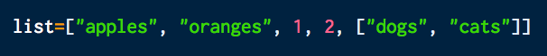
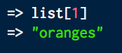
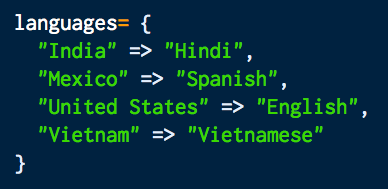
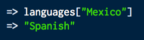

Why did the programmer quit his job?
Because he didn't get arrays
Programming can get messy. Often times, you have to deal with large amounts of data. It is important to keep information organized to easily reference it when necessary. This is where arrays and hashes come in handy! Arrays and hashes make it easy to store and look up data.
Arrays are collections of objects (such as strings, numbers, hashes, arrays, classes, Booleans, etc.) that are ordered by index numbers. Each index points to a different object, and the numbering starts at 0. The end of an array numbering starts at -1. Arrays are more useful when the order is important.
To access a specfic object in an array, you refer to the object's index number.
Hashes are a list of objects that are sorted by key-value pairs. The key can be any object from a number to a string. For a hash, every key is unique; however, values can be reused multiple times. Hashes track the order in which key-value pairs are created. With hashes, you can quickly look up an object based on its key rather than its index. Hashes are typically more useful when dealing with unordered lists.
To access a specfic object in a hash, you refer to the object's key.
